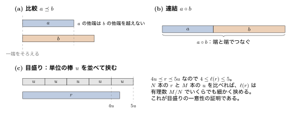

2 長さの測定
棒に対して行う手順は二つだけである。 棒を端と端でつなぐこと (連結) と、二本の棒の一端をそろえて並べ、他端がどちらに出るかを見ること (比較) である。 「長さ」という量は仮定せず、棒の集まりとこの二つの手順を原始概念とする。 比較と連結の構造から数値の目盛りを作る問題は、測定理論の基本問題である [ 20 , 21 ] 。

棒の集まり \(A\) の上で、\(a\) と \(b\) の一端をそろえて並べたとき \(a\) の他端が \(b\) の他端を越えないことを \(a \preceq b\) と書く。 \(a\) と \(b\) を端と端でつないだ棒を \(a \circ b\) と書く。
比較と連結が次の法則を満たすとき、外延的構造という。
比較は全順序的で推移的。
連結は、比較で区別できない範囲で結合的かつ可換。
単調性：\(a \preceq b \iff a \circ c \preceq b \circ c\)。
正値性：\(a \circ b \not\preceq a\)。
アルキメデス性：\(a \not\preceq b\) なら、任意の \(c, d\) に対しある \(n\) で \((n+1) b \circ d \preceq (n+1) a \circ c\)。
棒の比較と連結は外延的構造をなす。
同じ構造は、天秤の比較と同じ皿への同時載せによる質量にも使う (経験則 31)。
目盛り \(\ell : A \to \mathbb {R}\) が構造を表現するとは、\(a \preceq b \iff \ell (a) \le \ell (b)\) かつ \(\ell (a \circ b) = \ell (a) + \ell (b)\) が成り立つことをいう。 表現する目盛りの値は正である。
単位の棒 \(u\) を選ぶと、構造を表現する目盛り \(\ell \) で \(\ell (u) = 1\) を満たすものが存在する。
比較で区別できない棒を同一視した商 \(Q\) は、全順序を持つ可換半群になり、単調性から相殺則が成り立つ。 \(Q \times Q\) の形式的な差 \((x, y) \mapsto x - y\) で群 \(G\) を作り、順序 \((x,y) \le (z,w) :\iff x + w \le z + y\) を入れる。 アルキメデス性の公理から \(G\) はアルキメデス的になる。 \(G\) を Hölder の定理 (Mathlib の Archimedean.embedReal) で \(\mathbb {R}\) に埋め込み、棒 \(a\) を \(G\) の元 \((a + a) - a\) に送る写像と合成する。
構造を表現する二つの目盛りが単位の棒に \(1\) を割り当てるなら、両者は一致する。
\(\ell (r) {\lt} \ell '(r)\) と仮定し、有理数 \(M/N\) を \(\ell (r) {\lt} M/N {\lt} \ell '(r)\) となるようにとる。 \(N\) 本の \(r\) と \(M\) 本の \(u\) を比較すると、どちらの向きでも \(\ell \) か \(\ell '\) の表現性に矛盾する。
対象の集まりの上の二つの目盛り (実数値関数) \(m_A, m_B\) が両立するとは、ある \(c {\gt} 0\) で \(m_B = c\, m_A\) となることをいう。
\(c\) は単位の違いに対応する。 異なる手順を同じ量として扱うときは、両立を経験則か定理として明示する。
同じ外延的構造を表現する二つの目盛りは両立する。 経験的に確かめるべきなのは、二つの手続きが同じ比較と連結の結果を与えることの方である。
それぞれを単位の棒での値で割ると、一意性の定理から一致する。